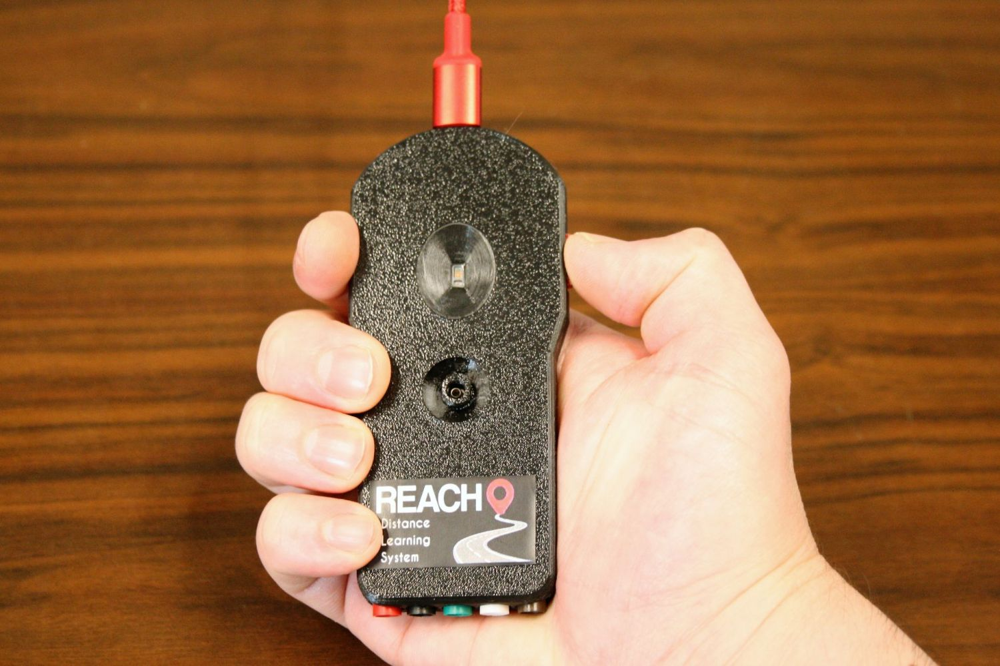
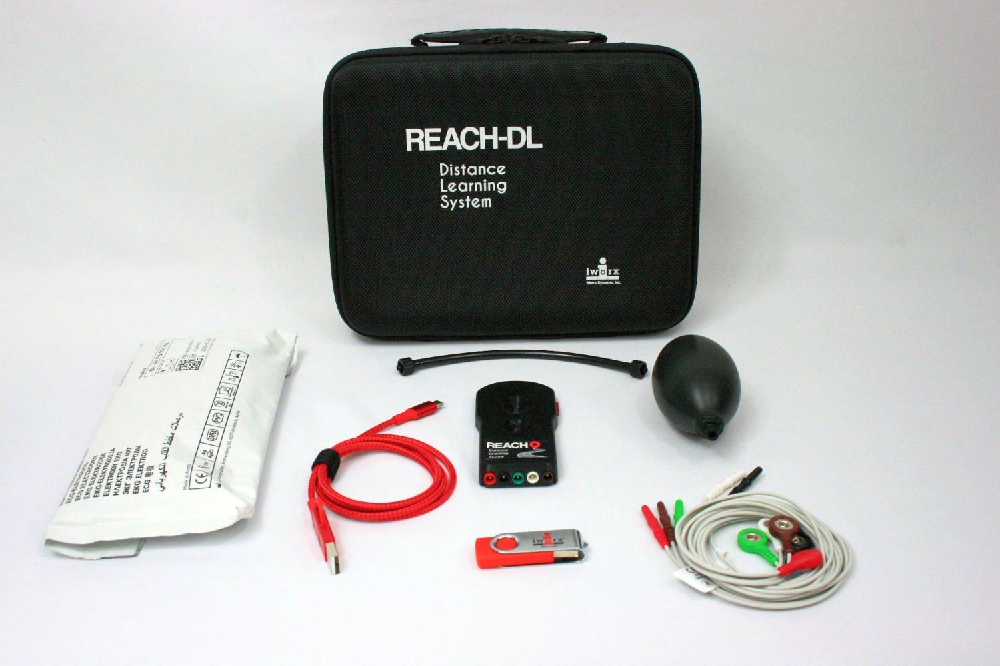

Remote Learning Acquisition System
This was a project spurred by an increased demand for high quality remote learning tools. For this device I designed the PCB, firmware, mechanical enclosure, QA procedures, assembly procedures, EVA cutouts for shipping, and handled some of the procurement of specialized components. The initial production run was for 1,000 units which I was able to accomplish in under 6 months. I used an M4 microcontroller to gather data from the sensors through i2c, SPI, and GPIO to gather data into a buffer class and synchronously transmit data to our logging software over USB.
The device can measure pressure, photoplethysmography (PPG), ECG, headphone output, and has a button to measure reaction times to an RGB LED on the device. Having just designed the PCB for a standalone PPG sensor I decided I would use an i2c based sensor with an integrated ADC that communicated with a “sensor hub” that did some nice calculations for you such as SPO2, heart rate, and a few others that weren’t particularly useful for my application. The development schedule for this was tight so I wanted to minimize unknowns by selected components that already had things “figured out.” If only things worked as you expect…
When designing the firmware, I decided I would try C++ to see if I could increase the reusability of my code. I designed communication classes which could be inherited by a device class so if the ECG analog front-end used SPI I could configure it as an SPI device by simply inheriting an interface class and implementing a virtual processData function. This worked pretty well but got messy when mapping hardware interrupts. I ended up creating a registration class to handle interrupt events and dispatch them to subscribed classes.
The sensor hub couldn’t handle communications above a certain interval which changed for different commands. The standard was a 20ms delay. This turned out to be kind of a pain because I had to create a command queue with the timing information for each command in the command structure. I’d process the next command after each command finished transmitting by loading the delay into a one-shot timer interrupt and processing the command at the interrupt. A fixed latency I can handle, but the latency on the sensor hub was anything but fixed. The granularity of the data output timer on the sensor hub was absurdly large, something like 20ms so if I requested data from the hub and it was busy it would be another 20ms before I received all the data. To get this sensor hub to output data at a regular rate I end up trying to set my frequency by trial and error so that my requests don’t line up with internal processes on the hub until I get consistent data output. I could rant about the many other problems I had with this thing but let’s end it there and just say I removed the sensor hub in the next revision (which would be the final revision). I performed the calculations myself and washed my hands of this sensor hub business.
When designing the enclosure, I decided to integrate the luer connector so I could simplify assembly and reduce the overall thickness of the enclosure. Deciding on a method of production was something I also had to consider. This was a product that finally had enough volume that I could get it injection molded! Alas, I had to put aside my ambitions and stick with what I knew to ensure I could meet the expected ship date. We scaled up our 3D printer capacity and started printing the cases before I finished the firmware or even the final PCB revision.
After finishing the firmware, the benefits of using an RTOS became more apparent. Having to write the code for a command queue and that would trigger a one-shot timer interrupt wasn’t necessarily complicated, but it involves some debugging for code that I wouldn’t have needed to write if I had used an RTOS.
